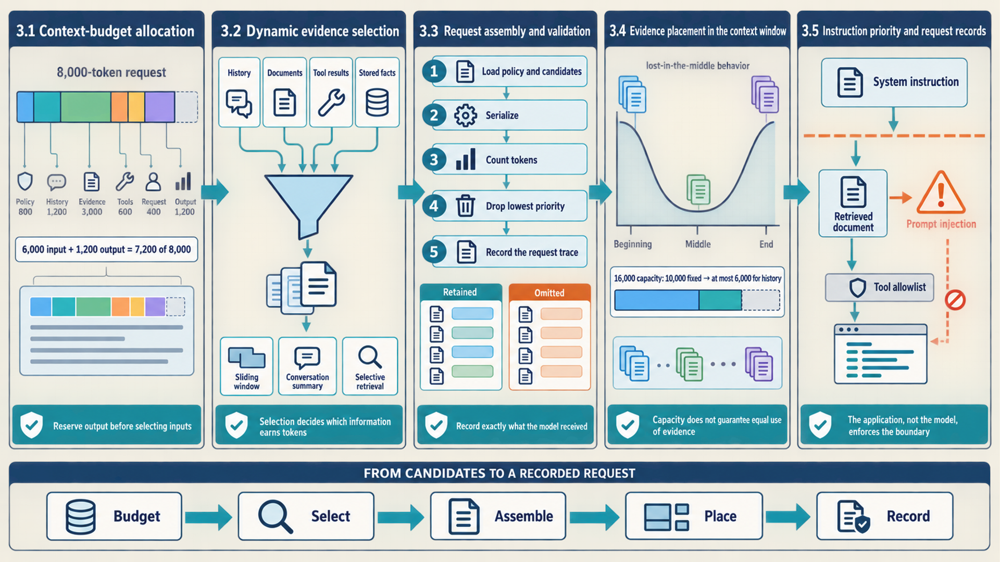
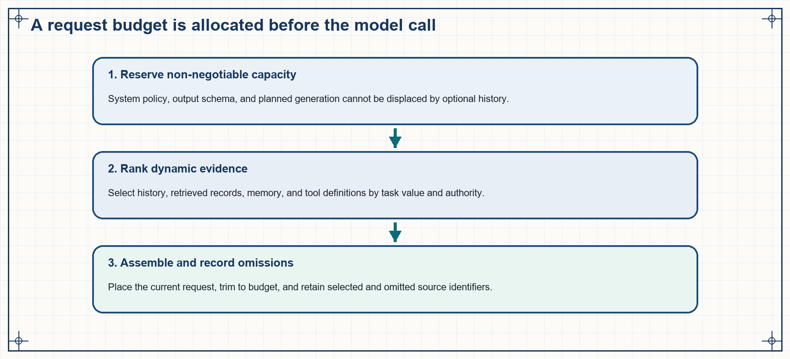
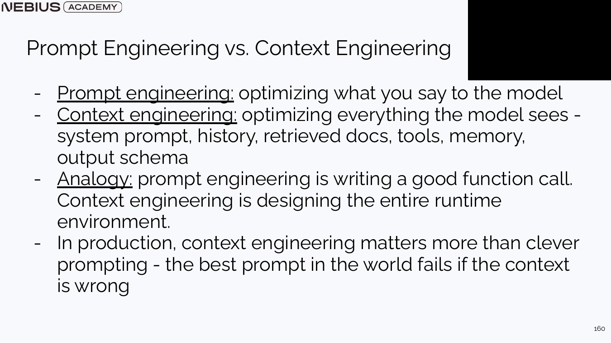
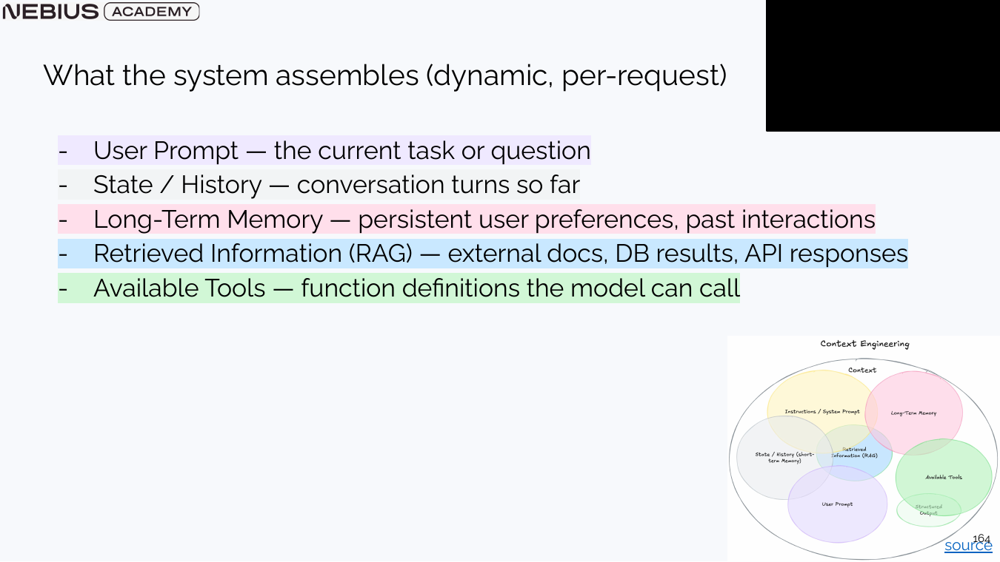
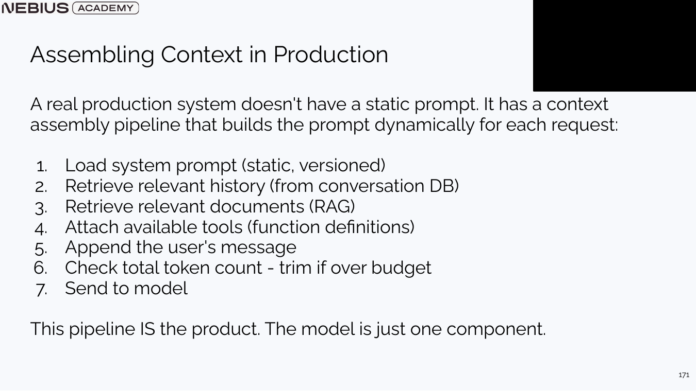
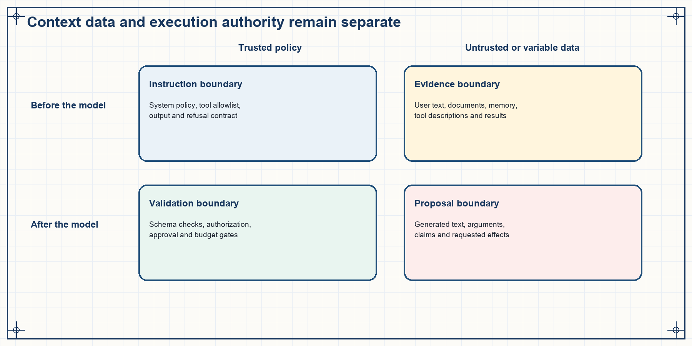

3 Request context: budget, evidence, and trust
Chapter 2 defined the task, response shape, and checks for one request. The application must now decide which history, retrieved evidence, tool definitions, and stored facts fit into the limited context window and may be used for this request. A context builder allocates the budget, selects and orders the inputs, compresses old history, keeps application rules separate from untrusted text, checks access rules, and records what it sent to the model.

The process starts with a finite budget, selects and assembles changing evidence, keeps important information visible, and preserves the priority of trusted instructions over untrusted content.
3.1 Context-budget allocation
A structured request has stable policy, dynamic data, and reserved output. As history, retrieval, examples, and tool definitions accumulate, these components compete for one finite token capacity. A budget makes the competition explicit before trimming rules silently remove the wrong information.
The context window covers the serialized input and usually the generated output. A practical budget allocates tokens to stable system policy, conversation history, retrieved evidence, tool schemas, the current user request, and planned output.
\[ B_{sys}+B_{hist}+B_{evidence}+B_{tools}+B_{user}+B_{out} \le C \tag{3.1}\]
The \(B\) terms allocate tokens to system policy, history, evidence, tool definitions, the user request, and output, respectively; \(C\) is the context capacity in tokens. Each input allocation must include its serialization overhead, or a separate margin must reserve that overhead. The inequality requires the complete input plus reserved output to fit. It checks capacity, not answer quality.
Worked calculation - allocate an 8,000-token request
Reserve 800 tokens for system policy, 1,200 for recent history, 3,000 for retrieved evidence, 600 for tool schemas, 400 for the user request, and 1,200 for output.
- Input allocation is 800 + 1,200 + 3,000 + 600 + 400 = 6,000 tokens.
- Adding 1,200 reserved output tokens produces 7,200 tokens.
- The remaining 800 tokens are safety margin for chat-template overhead and count variation.
Result: The request fits the 8,000-token capacity and preserves the final safety margin.
Interpretation: If evidence grows by 1,500 tokens, rerank or summarize it before serialization so output capacity and policy remain protected.

Budgeting is a software step. The model cannot recover a source or instruction that the context builder omitted.
3.2 Dynamic evidence selection
A budget defines how much information can enter the request. The harder problem is selecting which history, documents, tool results, and stored facts are worth those tokens. Context engineering treats selection as an application pipeline rather than as a longer prompt.
Prompt engineering improves the wording of an instruction. Context engineering decides everything the model sees: stable instructions, the current request, selected history, retrieved records, tool definitions, stored information, and the output schema. It also decides their order, which older text to compress, where each item came from, and whether it is trusted policy or untrusted data.

A polished instruction cannot compensate for stale facts, missing history, irrelevant retrieved text, or a tool definition the model never received.
User input, recent conversation state, long-term stored information, retrieved documents, and tool descriptions are stored in different places and change at different times.

The Venn diagram should not be read as permission to include everything. Each component enters only when it improves the current task enough to justify tokens and risk.
Sliding window: A history policy that keeps the most recent turns and drops older ones. It is cheap and predictable but can lose earlier commitments.
Conversation summary: A compressed representation of earlier turns. It should preserve decisions, constraints, entities, and unresolved questions while discarding conversational filler.
Selective retrieval: A history or knowledge policy that searches stored records and includes only items relevant to the current request.
Information placement also matters. Models can underuse facts buried inside long contexts, a pattern often called lost in the middle. Put stable application rules near the beginning, the current request near the end, and retrieved evidence in an order that reflects task relevance and source reliability. Position helps; it does not replace explicit source labels.
3.3 Request assembly and validation
We now have a token budget and a set of candidate inputs. The application must turn them into the request sent to the model. That requires an order for loading and selecting the inputs, checking their total size, and trimming lower-priority material. Logging the input actually sent to the model lets an engineer later check whether a poor answer came from missing information or from how the model used it.
A robust request builder loads a known policy version, finds relevant conversation state and external evidence, selects allowed tools, appends the user request, counts the serialized tokens, and trims lower-priority material when necessary. It records the policy version and selected sources so an engineer can reconstruct the request later.

The resulting request trace identifies the selected history items, documents, and tools independently of the final answer. It must describe the inputs retained after trimming, not the larger candidate set loaded beforehand.
Code example 3.1 - context assembly preserves source identity and output capacity.
This abbreviated Python function takes three application helpers. load_context(user_id, question) returns a versioned policy and a ranked list of authorized history, evidence, memory, or tool items. serialize assembles the provider request with policy and question kept separate from optional items; it preserves their role and source labels. count_tokens counts that complete request using the selected model’s tokenizer. Each optional item has a stable ID and a priority score, with smaller scores removed first. These helpers perform the retrieval, permission, formatting, and tokenization work; the function below shows how trimming and the final record stay consistent.
Code example: Code example 3.1 - context assembly preserves source identity and output capacity.
from dataclasses import dataclass
from typing import Any, Literal
@dataclass(frozen=True)
class ContextItem:
kind: Literal["history", "evidence", "memory", "tool"]
id: str
payload: Any
priority: float
def build_request(user_id, question, token_limit, *,
load_context, serialize, count_tokens,
reserved_output_tokens=1200):
if token_limit <= 0 or not 0 <= reserved_output_tokens < token_limit:
raise ValueError("Reserve must leave a positive input budget")
max_input_tokens = token_limit - reserved_output_tokens
policy, candidates = load_context(user_id, question)
kept, omitted = list(candidates), []
while True:
request = serialize(policy, kept, question)
input_tokens = count_tokens(request)
if input_tokens <= max_input_tokens:
break
if not kept:
raise ValueError("Required policy and question exceed the budget")
worst = min(range(len(kept)), key=lambda i: kept[i].priority)
omitted.append(kept.pop(worst))
return request, {
"policy_version": policy.version,
"retained": [{"kind": item.kind, "id": item.id} for item in kept],
"omitted": [{"kind": item.kind, "id": item.id} for item in omitted],
"input_tokens": input_tokens,
"reserved_output_tokens": reserved_output_tokens,
}After each removal, the function serializes and counts again. The policy and current question cannot be removed: if those alone exceed the available input budget, the request fails before any model call. On success, retained and omitted identify the actual selection, and the token count corresponds to the returned request. For example, with a 900-token input allowance, dropping a 200-token low-priority history item from a 1,050-token request leaves 850 tokens; the log must list that history item as omitted, not retained.
The application checks permission before documents or tool definitions enter the candidate list. It then saves the returned request record under the logging and privacy policy described in Section 3.5. Hiding an unauthorized result after generation would leave the model exposed to information it should never have received.
3.4 Evidence placement in the context window
The request builder can fit every selected component inside the nominal token limit. Capacity alone does not guarantee that the model will use evidence equally at every position or preserve every detail after compression. Position-sensitive tests expose lost-in-the-middle behavior, while versioned summaries and selective retrieval control what is compressed or omitted.
Long-context evaluation commonly finds that evidence near the beginning or end of a prompt is used more reliably than equally relevant evidence buried in the middle. The curve depends on the model, prompt, task, and context length. Treat it as dated empirical evidence and test it on the product’s own cases. A product should test the same cases with evidence positions permuted and record whether answer quality changes.
A sliding window keeps recent turns exactly but can drop an early commitment. A conversation summary compresses older turns, so an omission in the summary can persist. Selective retrieval keeps the original records and chooses a small relevant subset for each request. A system may combine all three: recent turns, a versioned summary for continuity, and retrieval over the original event history.
Worked calculation - reserve context before selecting history
A model has a 16,000-token capacity. Stable policy and tool definitions require 2,400 tokens, retrieved evidence is capped at 5,000, the current request uses 600, and output reserves 2,000.
- Fixed allocations consume 2,400 + 5,000 + 600 + 2,000 = 10,000 tokens.
- At most 6,000 tokens remain for recent turns and summaries.
- If recent exact turns consume 4,500 tokens, only 1,500 remain for older summarized history.
Result: The history selector must choose what the remaining 1,500 summary tokens preserve; it cannot treat summarization as lossless.
Interpretation: The allocation exposes an application decision. Important commitments can be stored as typed state or as long-lived memory with review and deletion rules instead of being left inside a shrinking conversation summary.
3.5 Instruction priority and request records
Context selection now combines policy, user input, history, retrieval, tools, and memory. Those inputs do not have equal priority or trustworthiness, and an untrusted document can contain text that looks like an instruction. The application marks where each item came from, selects which tool definitions may enter the request, checks permission outside the model, and records the final context in order.
Prompt injection occurs when untrusted content changes instructions or tool use as though it were trusted application policy. Delimiters and role labels help the model distinguish sources, but they do not grant permission. Tool allowlists, identity checks, argument validation, limited credentials, confirmation for consequential actions, and output validation are application checks outside the model.
A context trace should retain the policy version, user-request identifier, selected history and memory identifiers, retrieved source units and ranks, tool-schema versions, token counts by component, trimming decisions, and the exact serialized request or a privacy-safe reproducible version. This record lets an evaluator distinguish missing context, conflicting context, ignored evidence, and a tool definition that should not have been available.

The model sees both instructions and data, but document text does not become application policy and a model proposal does not grant itself permission. Application checks preserve that boundary before and after generation.
| Observed failure | First evidence to inspect | Typical repair |
|---|---|---|
| Correct policy omitted | Policy loader and version pin | Fail closed when the required version is unavailable |
| Old promise forgotten | History retrieval and summary | Store commitments as typed state or governed memory |
| Relevant document drowned by noise | Retrieval ranking and context order | Rerank, deduplicate, and shorten evidence |
| Valid JSON with unsupported values | Semantic validator | Validate retrieved identifiers and fields |
| Unsafe tool proposal | Authorization and side-effect gate | Check identity, scope, arguments, and approval outside the model |
A context pipeline can be repeatable and still select the wrong information. Chapter 4 defines the evaluation evidence needed to test whether a change to the prompt, context policy, model, or workflow improves the application.